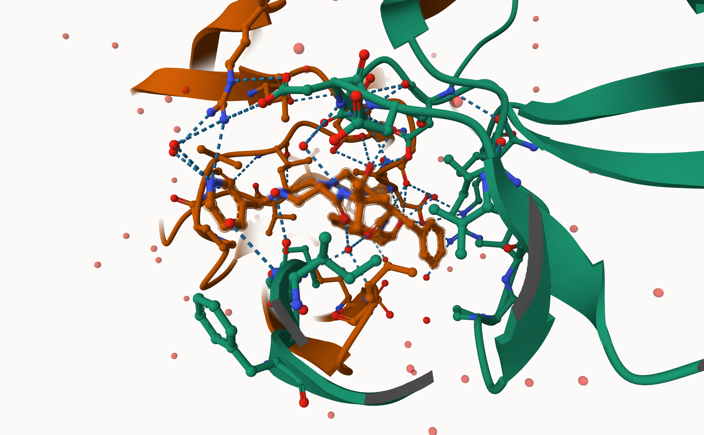
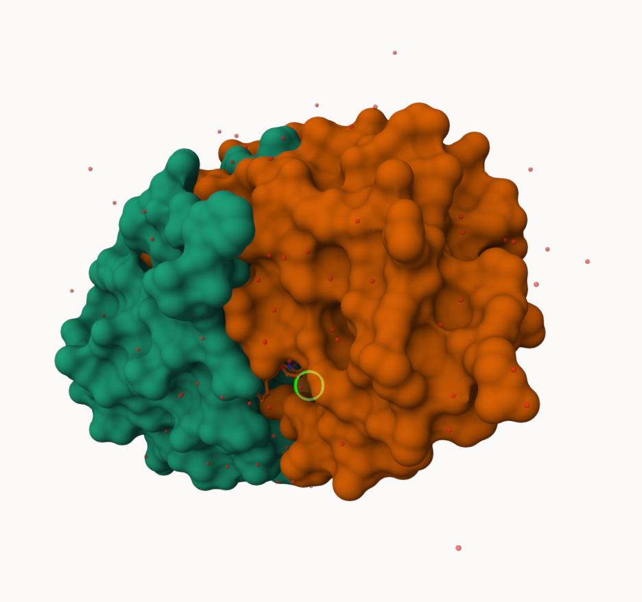
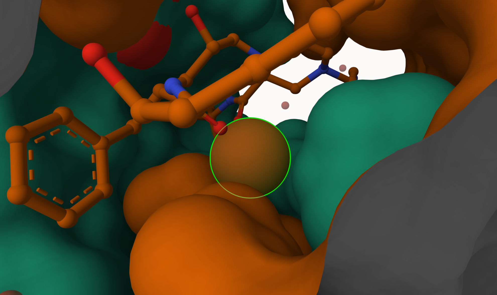
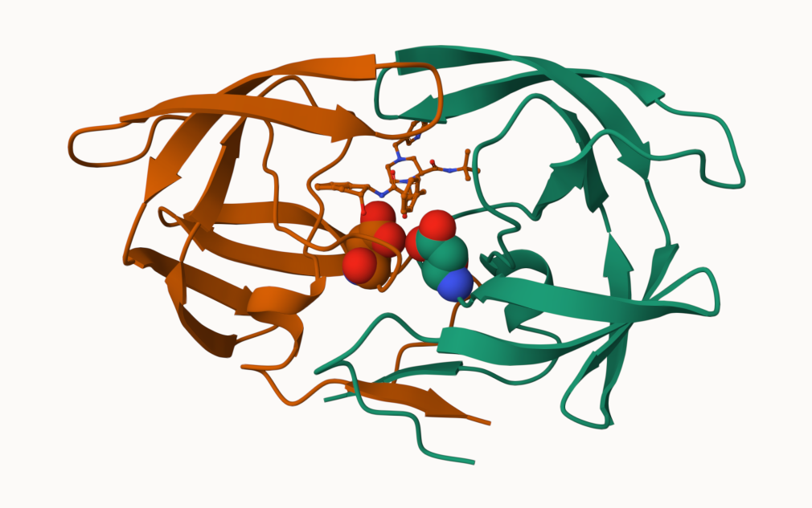
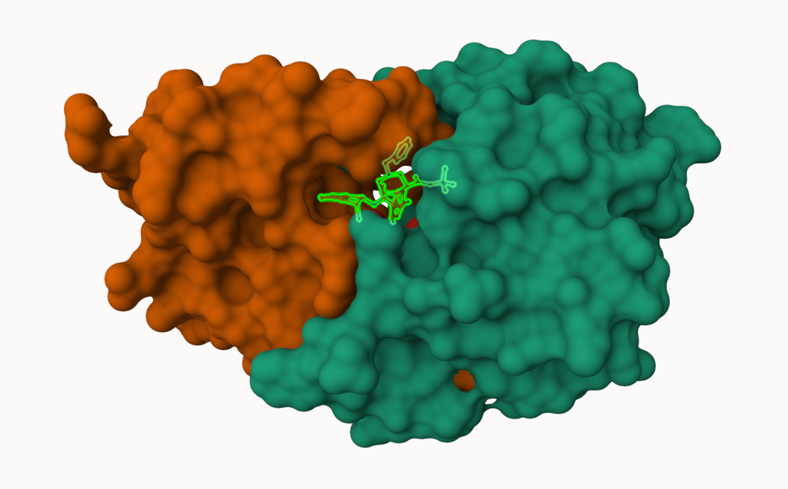
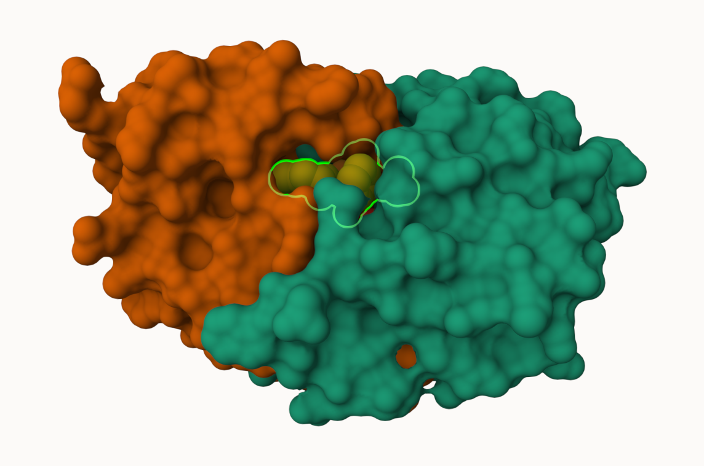

pdbdb <- read.csv("pdb_stats.csv")Class 9: Structural Bioinformatics (pt1)
Introduction to the RCSB Protein Data Bank (PDB)
head(pdbdb) Molecular.Type X.ray EM NMR Multiple.methods Neutron Other
1 Protein (only) 167,192 15,572 12,529 208 77 32
2 Protein/Oligosaccharide 9,639 2,635 34 8 2 0
3 Protein/NA 8,730 4,697 286 7 0 0
4 Nucleic acid (only) 2,869 137 1,507 14 3 1
5 Other 170 10 33 0 0 0
6 Oligosaccharide (only) 11 0 6 1 0 4
Total
1 195,610
2 12,318
3 13,720
4 4,531
5 213
6 22Q1: What percentage of structures in the PDB are solved by X-Ray and Electron Microscopy.
Approach 1: Write a function to remove all the commas and turn it into a number to do math
# Remove character (comma) to be left only with a number
# Turn that column into a number class
x <- pdbdb$Total
comma2numeric <- function(x){
as.numeric(sub(',','',x))
}comma2numeric(x)[1] 195610 12318 13720 4531 213 22Approach 2: Employ a different read csv function
# install tidyverse: install.packages("tidyverse")
library(readr)
pdbdb <- read_csv('pdb_stats.csv')Rows: 6 Columns: 8
── Column specification ────────────────────────────────────────────────────────
Delimiter: ","
chr (1): Molecular Type
dbl (3): Multiple methods, Neutron, Other
num (4): X-ray, EM, NMR, Total
ℹ Use `spec()` to retrieve the full column specification for this data.
ℹ Specify the column types or set `show_col_types = FALSE` to quiet this message.# New table that changed all of the characters
pdbdb# A tibble: 6 × 8
`Molecular Type` `X-ray` EM NMR `Multiple methods` Neutron Other Total
<chr> <dbl> <dbl> <dbl> <dbl> <dbl> <dbl> <dbl>
1 Protein (only) 167192 15572 12529 208 77 32 195610
2 Protein/Oligosacc… 9639 2635 34 8 2 0 12318
3 Protein/NA 8730 4697 286 7 0 0 13720
4 Nucleic acid (onl… 2869 137 1507 14 3 1 4531
5 Other 170 10 33 0 0 0 213
6 Oligosaccharide (… 11 0 6 1 0 4 22sum(pdbdb$`X-ray`) / sum(pdbdb$Total) * 100[1] 83.30359sum(pdbdb$EM) / sum(pdbdb$Total) * 100[1] 10.1809183.30% of structures in the PDB are solved by X-Ray while only 10.18% of structures in the PDB are solved by Electron Microscopy.
Q2: What proportion of structures in the PDB are protein?
pdbdb$Total[1]/sum(pdbdb$Total) * 100[1] 86.3948386.39% of structures in the PDB are only proteins
Q3: Type HIV in the PDB website search box on the home page and determine how many HIV-1 protease structures are in the current PDB?
In the current PDB database there are 4563 structures
Visualizing the HIV-1 protease structure
Using Mol
Using Mol is a new web-based molecular viewer that we will need to learn the basic of here
https://molstar.org/viewer/
We will use PDB code: 1HSG

Q4: Water molecules normally have 3 atoms. Why do we see just one atom per water molecule in this structure?
We are only seein one atom per water molecule in thgis structure because Mol viewer is setting some default parameters to make it easier for us to see. There are still 3 atoms in the water molecule but by turning it into one atom the screen gets less clutered
Q5: There is a critical “conserved” water molecule in the binding site. Can you identify this water molecule? What residue number does this water molecule have


This water molecule is residue #308 as shown in the images above. This water molecule is situated right inside of the complex
Q6: Generate and save a figure clearly showing the two distinct chains of HIV-protease along with the ligand. You might also consider showing the catalytic residues ASP 25 in each chain andØthe critical water (we recommend “Ball & Stick” for these side-chains). Add this figure to your Quarto document.



Q7: [Optional] As you have hopefully observed HIV protease is a homodimer (i.e. it is composed of two identical chains). With the aid of the graphic display can you identify secondary structure elements that are likely to only form in the dimer rather than the monomer?
Introduction to Bio3D in R
The bio3d package allows us to do all sorts of structural bioinformatics work in R
Let’s start with how it can read these PDB files
library(bio3d)
pdb <- read.pdb('1hsg') Note: Accessing on-line PDB filepdb
Call: read.pdb(file = "1hsg")
Total Models#: 1
Total Atoms#: 1686, XYZs#: 5058 Chains#: 2 (values: A B)
Protein Atoms#: 1514 (residues/Calpha atoms#: 198)
Nucleic acid Atoms#: 0 (residues/phosphate atoms#: 0)
Non-protein/nucleic Atoms#: 172 (residues: 128)
Non-protein/nucleic resid values: [ HOH (127), MK1 (1) ]
Protein sequence:
PQITLWQRPLVTIKIGGQLKEALLDTGADDTVLEEMSLPGRWKPKMIGGIGGFIKVRQYD
QILIEICGHKAIGTVLVGPTPVNIIGRNLLTQIGCTLNFPQITLWQRPLVTIKIGGQLKE
ALLDTGADDTVLEEMSLPGRWKPKMIGGIGGFIKVRQYDQILIEICGHKAIGTVLVGPTP
VNIIGRNLLTQIGCTLNF
+ attr: atom, xyz, seqres, helix, sheet,
calpha, remark, callattributes(pdb)$names
[1] "atom" "xyz" "seqres" "helix" "sheet" "calpha" "remark" "call"
$class
[1] "pdb" "sse"head(pdb$atom) type eleno elety alt resid chain resno insert x y z o b
1 ATOM 1 N <NA> PRO A 1 <NA> 29.361 39.686 5.862 1 38.10
2 ATOM 2 CA <NA> PRO A 1 <NA> 30.307 38.663 5.319 1 40.62
3 ATOM 3 C <NA> PRO A 1 <NA> 29.760 38.071 4.022 1 42.64
4 ATOM 4 O <NA> PRO A 1 <NA> 28.600 38.302 3.676 1 43.40
5 ATOM 5 CB <NA> PRO A 1 <NA> 30.508 37.541 6.342 1 37.87
6 ATOM 6 CG <NA> PRO A 1 <NA> 29.296 37.591 7.162 1 38.40
segid elesy charge
1 <NA> N <NA>
2 <NA> C <NA>
3 <NA> C <NA>
4 <NA> O <NA>
5 <NA> C <NA>
6 <NA> C <NA>pdbseq(pdb)[25] 25
"D" Q7: How many amino acid residues are there in this pdb object?
sum(pdb$calpha)[1] 198There are 198 amino acid residues in this pdb object
Q8: Name one of the two non-protein residues?
HOH and MK1
Q9: How many protein chains are in this structure?
unique(pdb$atom$chain)[1] "A" "B"There are 2 protein chains in this structure
Predicting functional motions of a single strucutre
Let’s do a bioinformatics prediction of functional motions - i.e. the movements that one of these molecules needs to make to do its stuff
adk <- read.pdb("6s36") Note: Accessing on-line PDB file
PDB has ALT records, taking A only, rm.alt=TRUEadk
Call: read.pdb(file = "6s36")
Total Models#: 1
Total Atoms#: 1898, XYZs#: 5694 Chains#: 1 (values: A)
Protein Atoms#: 1654 (residues/Calpha atoms#: 214)
Nucleic acid Atoms#: 0 (residues/phosphate atoms#: 0)
Non-protein/nucleic Atoms#: 244 (residues: 244)
Non-protein/nucleic resid values: [ CL (3), HOH (238), MG (2), NA (1) ]
Protein sequence:
MRIILLGAPGAGKGTQAQFIMEKYGIPQISTGDMLRAAVKSGSELGKQAKDIMDAGKLVT
DELVIALVKERIAQEDCRNGFLLDGFPRTIPQADAMKEAGINVDYVLEFDVPDELIVDKI
VGRRVHAPSGRVYHVKFNPPKVEGKDDVTGEELTTRKDDQEETVRKRLVEYHQMTAPLIG
YYSKEAEAGNTKYAKVDGTKPVAEVRADLEKILG
+ attr: atom, xyz, seqres, helix, sheet,
calpha, remark, call# Perform flexiblity prediction
m <- nma(adk) Building Hessian... Done in 0.016 seconds.
Diagonalizing Hessian... Done in 0.349 seconds.plot(m)
Write out a multi-mdel PDB file (trajectory) that we can use to make an animation of the predicted motions.
mktrj(m, file="adk.pdb")I can open this in Mol* to play the trajectory
Comparative Analysis of Protein strucutre
library(bio3d)Here I will find and analyze all Adenylate kinase (ADK) structures in the PDB database.
We will start with a single databse acession id: “1ake_A”
id <- '1ake_A'
aa <- get.seq(id)Warning in get.seq(id): Removing existing file: seqs.fastaFetching... Please wait. Done.Uncomment and run these packages in the cmds
#install.packages(“bio3d”) #install.packages(“devtools”) #install.packages(“BiocManager”)
#BiocManager::install(“msa”) #devtools::install_bitbucket(“Grantlab/bio3d-view”)
CRAN: R’s central software repository, supported by the R Foundation
Bioconductor: Package solely for bioinformatics
Q10. Which of the packages above is found only on BioConductor and not CRAN?
The MSA package
Q11. Which of the above packages is not found on BioConductor or CRAN?:
Q12. True or False? Functions from the devtools package can be used to install packages from GitHub and BitBucket?
TRUE
Q13. How many amino acids are in this sequence, i.e. how long is this sequence?
attributes(aa)$names
[1] "id" "ali" "call"
$class
[1] "fasta"# identifaciton
aa$id[1] "pdb|1AKE|A"# sequence
aa$ali [,1] [,2] [,3] [,4] [,5] [,6] [,7] [,8] [,9] [,10] [,11] [,12] [,13]
pdb|1AKE|A "M" "R" "I" "I" "L" "L" "G" "A" "P" "G" "A" "G" "K"
[,14] [,15] [,16] [,17] [,18] [,19] [,20] [,21] [,22] [,23] [,24]
pdb|1AKE|A "G" "T" "Q" "A" "Q" "F" "I" "M" "E" "K" "Y"
[,25] [,26] [,27] [,28] [,29] [,30] [,31] [,32] [,33] [,34] [,35]
pdb|1AKE|A "G" "I" "P" "Q" "I" "S" "T" "G" "D" "M" "L"
[,36] [,37] [,38] [,39] [,40] [,41] [,42] [,43] [,44] [,45] [,46]
pdb|1AKE|A "R" "A" "A" "V" "K" "S" "G" "S" "E" "L" "G"
[,47] [,48] [,49] [,50] [,51] [,52] [,53] [,54] [,55] [,56] [,57]
pdb|1AKE|A "K" "Q" "A" "K" "D" "I" "M" "D" "A" "G" "K"
[,58] [,59] [,60] [,61] [,62] [,63] [,64] [,65] [,66] [,67] [,68]
pdb|1AKE|A "L" "V" "T" "D" "E" "L" "V" "I" "A" "L" "V"
[,69] [,70] [,71] [,72] [,73] [,74] [,75] [,76] [,77] [,78] [,79]
pdb|1AKE|A "K" "E" "R" "I" "A" "Q" "E" "D" "C" "R" "N"
[,80] [,81] [,82] [,83] [,84] [,85] [,86] [,87] [,88] [,89] [,90]
pdb|1AKE|A "G" "F" "L" "L" "D" "G" "F" "P" "R" "T" "I"
[,91] [,92] [,93] [,94] [,95] [,96] [,97] [,98] [,99] [,100] [,101]
pdb|1AKE|A "P" "Q" "A" "D" "A" "M" "K" "E" "A" "G" "I"
[,102] [,103] [,104] [,105] [,106] [,107] [,108] [,109] [,110]
pdb|1AKE|A "N" "V" "D" "Y" "V" "L" "E" "F" "D"
[,111] [,112] [,113] [,114] [,115] [,116] [,117] [,118] [,119]
pdb|1AKE|A "V" "P" "D" "E" "L" "I" "V" "D" "R"
[,120] [,121] [,122] [,123] [,124] [,125] [,126] [,127] [,128]
pdb|1AKE|A "I" "V" "G" "R" "R" "V" "H" "A" "P"
[,129] [,130] [,131] [,132] [,133] [,134] [,135] [,136] [,137]
pdb|1AKE|A "S" "G" "R" "V" "Y" "H" "V" "K" "F"
[,138] [,139] [,140] [,141] [,142] [,143] [,144] [,145] [,146]
pdb|1AKE|A "N" "P" "P" "K" "V" "E" "G" "K" "D"
[,147] [,148] [,149] [,150] [,151] [,152] [,153] [,154] [,155]
pdb|1AKE|A "D" "V" "T" "G" "E" "E" "L" "T" "T"
[,156] [,157] [,158] [,159] [,160] [,161] [,162] [,163] [,164]
pdb|1AKE|A "R" "K" "D" "D" "Q" "E" "E" "T" "V"
[,165] [,166] [,167] [,168] [,169] [,170] [,171] [,172] [,173]
pdb|1AKE|A "R" "K" "R" "L" "V" "E" "Y" "H" "Q"
[,174] [,175] [,176] [,177] [,178] [,179] [,180] [,181] [,182]
pdb|1AKE|A "M" "T" "A" "P" "L" "I" "G" "Y" "Y"
[,183] [,184] [,185] [,186] [,187] [,188] [,189] [,190] [,191]
pdb|1AKE|A "S" "K" "E" "A" "E" "A" "G" "N" "T"
[,192] [,193] [,194] [,195] [,196] [,197] [,198] [,199] [,200]
pdb|1AKE|A "K" "Y" "A" "K" "V" "D" "G" "T" "K"
[,201] [,202] [,203] [,204] [,205] [,206] [,207] [,208] [,209]
pdb|1AKE|A "P" "V" "A" "E" "V" "R" "A" "D" "L"
[,210] [,211] [,212] [,213] [,214]
pdb|1AKE|A "E" "K" "I" "L" "G" # line used to read it
aa$callread.fasta(file = outfile)# The fasta sequence
aa$fastaNULL# Number of sequences (1 column = 1 amino acid)
ncol(aa$ali)[1] 214There are 214 amino acids in this sequence
BLAST search the PDB to find similar sequences and structures
Blast search:
#b <- blast.pdb(aa)Pre-calculated results of blast search:
hits <- NULL
hits$pdb.id <- c('1AKE_A','6S36_A','6RZE_A','3HPR_A','1E4V_A','5EJE_A','1E4Y_A','3X2S_A','6HAP_A','6HAM_A','4K46_A','3GMT_A','4PZL_A')# Download releated PDB files
files <- get.pdb(hits$pdb.id, path="pdbs", split=TRUE, gzip=TRUE)Warning in get.pdb(hits$pdb.id, path = "pdbs", split = TRUE, gzip = TRUE):
pdbs/1AKE.pdb.gz exists. Skipping downloadWarning in get.pdb(hits$pdb.id, path = "pdbs", split = TRUE, gzip = TRUE):
pdbs/6S36.pdb.gz exists. Skipping downloadWarning in get.pdb(hits$pdb.id, path = "pdbs", split = TRUE, gzip = TRUE):
pdbs/6RZE.pdb.gz exists. Skipping downloadWarning in get.pdb(hits$pdb.id, path = "pdbs", split = TRUE, gzip = TRUE):
pdbs/3HPR.pdb.gz exists. Skipping downloadWarning in get.pdb(hits$pdb.id, path = "pdbs", split = TRUE, gzip = TRUE):
pdbs/1E4V.pdb.gz exists. Skipping downloadWarning in get.pdb(hits$pdb.id, path = "pdbs", split = TRUE, gzip = TRUE):
pdbs/5EJE.pdb.gz exists. Skipping downloadWarning in get.pdb(hits$pdb.id, path = "pdbs", split = TRUE, gzip = TRUE):
pdbs/1E4Y.pdb.gz exists. Skipping downloadWarning in get.pdb(hits$pdb.id, path = "pdbs", split = TRUE, gzip = TRUE):
pdbs/3X2S.pdb.gz exists. Skipping downloadWarning in get.pdb(hits$pdb.id, path = "pdbs", split = TRUE, gzip = TRUE):
pdbs/6HAP.pdb.gz exists. Skipping downloadWarning in get.pdb(hits$pdb.id, path = "pdbs", split = TRUE, gzip = TRUE):
pdbs/6HAM.pdb.gz exists. Skipping downloadWarning in get.pdb(hits$pdb.id, path = "pdbs", split = TRUE, gzip = TRUE):
pdbs/4K46.pdb.gz exists. Skipping downloadWarning in get.pdb(hits$pdb.id, path = "pdbs", split = TRUE, gzip = TRUE):
pdbs/3GMT.pdb.gz exists. Skipping downloadWarning in get.pdb(hits$pdb.id, path = "pdbs", split = TRUE, gzip = TRUE):
pdbs/4PZL.pdb.gz exists. Skipping download
|
| | 0%
|
|===== | 8%
|
|=========== | 15%
|
|================ | 23%
|
|====================== | 31%
|
|=========================== | 38%
|
|================================ | 46%
|
|====================================== | 54%
|
|=========================================== | 62%
|
|================================================ | 69%
|
|====================================================== | 77%
|
|=========================================================== | 85%
|
|================================================================= | 92%
|
|======================================================================| 100%next we will use the pdbaln() function to align and also optionally fit (i.e. superpose) the identified PDB strucutres
# Align releated PDBs
pdbs <- pdbaln(files, fit = TRUE, exefile="msa")Reading PDB files:
pdbs/split_chain/1AKE_A.pdb
pdbs/split_chain/6S36_A.pdb
pdbs/split_chain/6RZE_A.pdb
pdbs/split_chain/3HPR_A.pdb
pdbs/split_chain/1E4V_A.pdb
pdbs/split_chain/5EJE_A.pdb
pdbs/split_chain/1E4Y_A.pdb
pdbs/split_chain/3X2S_A.pdb
pdbs/split_chain/6HAP_A.pdb
pdbs/split_chain/6HAM_A.pdb
pdbs/split_chain/4K46_A.pdb
pdbs/split_chain/3GMT_A.pdb
pdbs/split_chain/4PZL_A.pdb
PDB has ALT records, taking A only, rm.alt=TRUE
. PDB has ALT records, taking A only, rm.alt=TRUE
. PDB has ALT records, taking A only, rm.alt=TRUE
. PDB has ALT records, taking A only, rm.alt=TRUE
.. PDB has ALT records, taking A only, rm.alt=TRUE
.... PDB has ALT records, taking A only, rm.alt=TRUE
. PDB has ALT records, taking A only, rm.alt=TRUE
...
Extracting sequences
pdb/seq: 1 name: pdbs/split_chain/1AKE_A.pdb
PDB has ALT records, taking A only, rm.alt=TRUE
pdb/seq: 2 name: pdbs/split_chain/6S36_A.pdb
PDB has ALT records, taking A only, rm.alt=TRUE
pdb/seq: 3 name: pdbs/split_chain/6RZE_A.pdb
PDB has ALT records, taking A only, rm.alt=TRUE
pdb/seq: 4 name: pdbs/split_chain/3HPR_A.pdb
PDB has ALT records, taking A only, rm.alt=TRUE
pdb/seq: 5 name: pdbs/split_chain/1E4V_A.pdb
pdb/seq: 6 name: pdbs/split_chain/5EJE_A.pdb
PDB has ALT records, taking A only, rm.alt=TRUE
pdb/seq: 7 name: pdbs/split_chain/1E4Y_A.pdb
pdb/seq: 8 name: pdbs/split_chain/3X2S_A.pdb
pdb/seq: 9 name: pdbs/split_chain/6HAP_A.pdb
pdb/seq: 10 name: pdbs/split_chain/6HAM_A.pdb
PDB has ALT records, taking A only, rm.alt=TRUE
pdb/seq: 11 name: pdbs/split_chain/4K46_A.pdb
PDB has ALT records, taking A only, rm.alt=TRUE
pdb/seq: 12 name: pdbs/split_chain/3GMT_A.pdb
pdb/seq: 13 name: pdbs/split_chain/4PZL_A.pdb pdbs 1 . . . 40
[Truncated_Name:1]1AKE_A.pdb ----------MRIILLGAPGAGKGTQAQFIMEKYGIPQIS
[Truncated_Name:2]6S36_A.pdb ----------MRIILLGAPGAGKGTQAQFIMEKYGIPQIS
[Truncated_Name:3]6RZE_A.pdb ----------MRIILLGAPGAGKGTQAQFIMEKYGIPQIS
[Truncated_Name:4]3HPR_A.pdb ----------MRIILLGAPGAGKGTQAQFIMEKYGIPQIS
[Truncated_Name:5]1E4V_A.pdb ----------MRIILLGAPVAGKGTQAQFIMEKYGIPQIS
[Truncated_Name:6]5EJE_A.pdb ----------MRIILLGAPGAGKGTQAQFIMEKYGIPQIS
[Truncated_Name:7]1E4Y_A.pdb ----------MRIILLGALVAGKGTQAQFIMEKYGIPQIS
[Truncated_Name:8]3X2S_A.pdb ----------MRIILLGAPGAGKGTQAQFIMEKYGIPQIS
[Truncated_Name:9]6HAP_A.pdb ----------MRIILLGAPGAGKGTQAQFIMEKYGIPQIS
[Truncated_Name:10]6HAM_A.pdb ----------MRIILLGAPGAGKGTQAQFIMEKYGIPQIS
[Truncated_Name:11]4K46_A.pdb ----------MRIILLGAPGAGKGTQAQFIMAKFGIPQIS
[Truncated_Name:12]3GMT_A.pdb ----------MRLILLGAPGAGKGTQANFIKEKFGIPQIS
[Truncated_Name:13]4PZL_A.pdb TENLYFQSNAMRIILLGAPGAGKGTQAKIIEQKYNIAHIS
**^***** ******* * *^ * **
1 . . . 40
41 . . . 80
[Truncated_Name:1]1AKE_A.pdb TGDMLRAAVKSGSELGKQAKDIMDAGKLVTDELVIALVKE
[Truncated_Name:2]6S36_A.pdb TGDMLRAAVKSGSELGKQAKDIMDAGKLVTDELVIALVKE
[Truncated_Name:3]6RZE_A.pdb TGDMLRAAVKSGSELGKQAKDIMDAGKLVTDELVIALVKE
[Truncated_Name:4]3HPR_A.pdb TGDMLRAAVKSGSELGKQAKDIMDAGKLVTDELVIALVKE
[Truncated_Name:5]1E4V_A.pdb TGDMLRAAVKSGSELGKQAKDIMDAGKLVTDELVIALVKE
[Truncated_Name:6]5EJE_A.pdb TGDMLRAAVKSGSELGKQAKDIMDACKLVTDELVIALVKE
[Truncated_Name:7]1E4Y_A.pdb TGDMLRAAVKSGSELGKQAKDIMDAGKLVTDELVIALVKE
[Truncated_Name:8]3X2S_A.pdb TGDMLRAAVKSGSELGKQAKDIMDCGKLVTDELVIALVKE
[Truncated_Name:9]6HAP_A.pdb TGDMLRAAVKSGSELGKQAKDIMDAGKLVTDELVIALVRE
[Truncated_Name:10]6HAM_A.pdb TGDMLRAAIKSGSELGKQAKDIMDAGKLVTDEIIIALVKE
[Truncated_Name:11]4K46_A.pdb TGDMLRAAIKAGTELGKQAKSVIDAGQLVSDDIILGLVKE
[Truncated_Name:12]3GMT_A.pdb TGDMLRAAVKAGTPLGVEAKTYMDEGKLVPDSLIIGLVKE
[Truncated_Name:13]4PZL_A.pdb TGDMIRETIKSGSALGQELKKVLDAGELVSDEFIIKIVKD
****^* ^* *^ ** * ^* ** * ^^ ^*^^
41 . . . 80
81 . . . 120
[Truncated_Name:1]1AKE_A.pdb RIAQEDCRNGFLLDGFPRTIPQADAMKEAGINVDYVLEFD
[Truncated_Name:2]6S36_A.pdb RIAQEDCRNGFLLDGFPRTIPQADAMKEAGINVDYVLEFD
[Truncated_Name:3]6RZE_A.pdb RIAQEDCRNGFLLDGFPRTIPQADAMKEAGINVDYVLEFD
[Truncated_Name:4]3HPR_A.pdb RIAQEDCRNGFLLDGFPRTIPQADAMKEAGINVDYVLEFD
[Truncated_Name:5]1E4V_A.pdb RIAQEDCRNGFLLDGFPRTIPQADAMKEAGINVDYVLEFD
[Truncated_Name:6]5EJE_A.pdb RIAQEDCRNGFLLDGFPRTIPQADAMKEAGINVDYVLEFD
[Truncated_Name:7]1E4Y_A.pdb RIAQEDCRNGFLLDGFPRTIPQADAMKEAGINVDYVLEFD
[Truncated_Name:8]3X2S_A.pdb RIAQEDSRNGFLLDGFPRTIPQADAMKEAGINVDYVLEFD
[Truncated_Name:9]6HAP_A.pdb RICQEDSRNGFLLDGFPRTIPQADAMKEAGINVDYVLEFD
[Truncated_Name:10]6HAM_A.pdb RICQEDSRNGFLLDGFPRTIPQADAMKEAGINVDYVLEFD
[Truncated_Name:11]4K46_A.pdb RIAQDDCAKGFLLDGFPRTIPQADGLKEVGVVVDYVIEFD
[Truncated_Name:12]3GMT_A.pdb RLKEADCANGYLFDGFPRTIAQADAMKEAGVAIDYVLEID
[Truncated_Name:13]4PZL_A.pdb RISKNDCNNGFLLDGVPRTIPQAQELDKLGVNIDYIVEVD
*^ * *^* ** **** ** ^ *^ ^**^^* *
81 . . . 120
121 . . . 160
[Truncated_Name:1]1AKE_A.pdb VPDELIVDRIVGRRVHAPSGRVYHVKFNPPKVEGKDDVTG
[Truncated_Name:2]6S36_A.pdb VPDELIVDKIVGRRVHAPSGRVYHVKFNPPKVEGKDDVTG
[Truncated_Name:3]6RZE_A.pdb VPDELIVDAIVGRRVHAPSGRVYHVKFNPPKVEGKDDVTG
[Truncated_Name:4]3HPR_A.pdb VPDELIVDRIVGRRVHAPSGRVYHVKFNPPKVEGKDDGTG
[Truncated_Name:5]1E4V_A.pdb VPDELIVDRIVGRRVHAPSGRVYHVKFNPPKVEGKDDVTG
[Truncated_Name:6]5EJE_A.pdb VPDELIVDRIVGRRVHAPSGRVYHVKFNPPKVEGKDDVTG
[Truncated_Name:7]1E4Y_A.pdb VPDELIVDRIVGRRVHAPSGRVYHVKFNPPKVEGKDDVTG
[Truncated_Name:8]3X2S_A.pdb VPDELIVDRIVGRRVHAPSGRVYHVKFNPPKVEGKDDVTG
[Truncated_Name:9]6HAP_A.pdb VPDELIVDRIVGRRVHAPSGRVYHVKFNPPKVEGKDDVTG
[Truncated_Name:10]6HAM_A.pdb VPDELIVDRIVGRRVHAPSGRVYHVKFNPPKVEGKDDVTG
[Truncated_Name:11]4K46_A.pdb VADSVIVERMAGRRAHLASGRTYHNVYNPPKVEGKDDVTG
[Truncated_Name:12]3GMT_A.pdb VPFSEIIERMSGRRTHPASGRTYHVKFNPPKVEGKDDVTG
[Truncated_Name:13]4PZL_A.pdb VADNLLIERITGRRIHPASGRTYHTKFNPPKVADKDDVTG
* ^^^ ^ *** * *** ** ^***** *** **
121 . . . 160
161 . . . 200
[Truncated_Name:1]1AKE_A.pdb EELTTRKDDQEETVRKRLVEYHQMTAPLIGYYSKEAEAGN
[Truncated_Name:2]6S36_A.pdb EELTTRKDDQEETVRKRLVEYHQMTAPLIGYYSKEAEAGN
[Truncated_Name:3]6RZE_A.pdb EELTTRKDDQEETVRKRLVEYHQMTAPLIGYYSKEAEAGN
[Truncated_Name:4]3HPR_A.pdb EELTTRKDDQEETVRKRLVEYHQMTAPLIGYYSKEAEAGN
[Truncated_Name:5]1E4V_A.pdb EELTTRKDDQEETVRKRLVEYHQMTAPLIGYYSKEAEAGN
[Truncated_Name:6]5EJE_A.pdb EELTTRKDDQEECVRKRLVEYHQMTAPLIGYYSKEAEAGN
[Truncated_Name:7]1E4Y_A.pdb EELTTRKDDQEETVRKRLVEYHQMTAPLIGYYSKEAEAGN
[Truncated_Name:8]3X2S_A.pdb EELTTRKDDQEETVRKRLCEYHQMTAPLIGYYSKEAEAGN
[Truncated_Name:9]6HAP_A.pdb EELTTRKDDQEETVRKRLVEYHQMTAPLIGYYSKEAEAGN
[Truncated_Name:10]6HAM_A.pdb EELTTRKDDQEETVRKRLVEYHQMTAPLIGYYSKEAEAGN
[Truncated_Name:11]4K46_A.pdb EDLVIREDDKEETVLARLGVYHNQTAPLIAYYGKEAEAGN
[Truncated_Name:12]3GMT_A.pdb EPLVQRDDDKEETVKKRLDVYEAQTKPLITYYGDWARRGA
[Truncated_Name:13]4PZL_A.pdb EPLITRTDDNEDTVKQRLSVYHAQTAKLIDFYRNFSSTNT
* * * ** *^ * ** * * ** ^*
161 . . . 200
201 . . 227
[Truncated_Name:1]1AKE_A.pdb T--KYAKVDGTKPVAEVRADLEKILG-
[Truncated_Name:2]6S36_A.pdb T--KYAKVDGTKPVAEVRADLEKILG-
[Truncated_Name:3]6RZE_A.pdb T--KYAKVDGTKPVAEVRADLEKILG-
[Truncated_Name:4]3HPR_A.pdb T--KYAKVDGTKPVAEVRADLEKILG-
[Truncated_Name:5]1E4V_A.pdb T--KYAKVDGTKPVAEVRADLEKILG-
[Truncated_Name:6]5EJE_A.pdb T--KYAKVDGTKPVAEVRADLEKILG-
[Truncated_Name:7]1E4Y_A.pdb T--KYAKVDGTKPVAEVRADLEKILG-
[Truncated_Name:8]3X2S_A.pdb T--KYAKVDGTKPVAEVRADLEKILG-
[Truncated_Name:9]6HAP_A.pdb T--KYAKVDGTKPVCEVRADLEKILG-
[Truncated_Name:10]6HAM_A.pdb T--KYAKVDGTKPVCEVRADLEKILG-
[Truncated_Name:11]4K46_A.pdb T--QYLKFDGTKAVAEVSAELEKALA-
[Truncated_Name:12]3GMT_A.pdb E-------NGLKAPA-----YRKISG-
[Truncated_Name:13]4PZL_A.pdb KIPKYIKINGDQAVEKVSQDIFDQLNK
*
201 . . 227
Call:
pdbaln(files = files, fit = TRUE, exefile = "msa")
Class:
pdbs, fasta
Alignment dimensions:
13 sequence rows; 227 position columns (204 non-gap, 23 gap)
+ attr: xyz, resno, b, chain, id, ali, resid, sse, callPerform a principal component analysis
# Perform PCA using the function
pc.xray <- pca(pdbs)
plot(pc.xray)
To visualzie the major strucutral variatons in the ensemble the function mktrk()
# Visualize first principal component
pc1 <- mktrj(pc.xray, pc=1, file="pc_1.pdb")